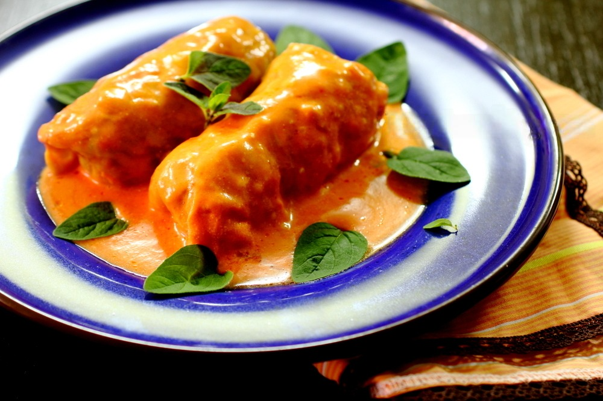

Класичні Голубці
Начинка:
- Свинячий або яловичий фарш: 500 г
- Рис: 1 стакан
- Цибуля: 1 шт.
- Морква: 1 шт.
- Часник: 2-3 зубчики
- Сіль, перець: за смаком
Соус:
- Томатна паста: 2 ст. л.
- Вода: 2 стакани
- Сметана: 2 ст. л.
- Лавровий лист: 2 шт.
Приготування
- Підготовка капусти: Розділіть капусту на листи та бланшуйте їх у киплячій воді 2-3 хвилини.
- Начинка: Змішайте фарш з відвареним рисом. Додайте цибулю, моркву, часник, сіль і перець.
- Формування голубців: Покладіть начинку на капустяний лист і згорніть.
- Гасіння: Тушкуйте голубці на повільному вогні протягом 1-1,5 години.
